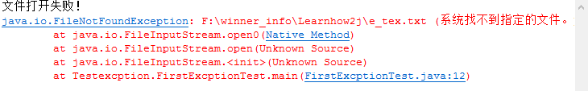
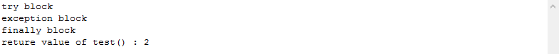
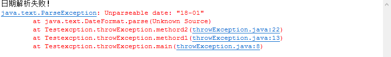
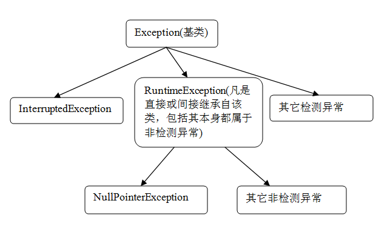

什么是异常
Java 异常是 Java 提供的一种识别及响应错误的一致性机制
例如打开本地的一个文件，如下代码，这个时候 FileInputStream 编译时会报错，
提示 FileNotFoundException1
2
3
4
5
6
7
8
9package exception;
import java.io.File;
import java.io.FileInputStream;
public class TestException {
public static void main(String[] args) {
File f = new File("F:/winner_info/Learnhow2j/e_tex.txt");
new FileInputStream(f);
}
}
使用异常处理机制 try-catch ，不管是文件路径不对还是文件不存在都可以避免异常
本地文件为 e_text.txt
1 | package Testexcption; |

控制台打印出来的信息是 java.io.FileNotFoundException
printStackTrace()方法的意思是：在命令行打印异常信息在程序中出错的位置及原因。
当使用 System.out.println(e) 时，也会打印错误信息，但仅显示1
java.io.FileNotFoundException: F:\winner_info\Learnhow2j\e_tex.txt (系统找不到指定的文件。)
e.printStackTrace();是打印异常的堆栈信息，指明错误原因，其实当发生异常时，通常要处理异常，这是编程的好习惯，所以e.printStackTrace()可以方便你调试程序！
异常处理
多个异常需要处理时，这样可以这样写，好处是捕捉的代码更紧凑，不足之处是，一旦发生异常，不能确定到底是哪种异常，需要通过 instanceof 进行判断具体的异常类型
1
catch (FileNotFoundException | ParseException e)
或者分别进行catch，这种方法能清晰的了解异常出现的具体情况。
1
2
3
4
5
6
7
8
9
10
11
12
13
14catch (FileNotFoundException e){
if (e instanceof FileNotFoundException){
System.out.println("文件打开失败！");
}
e.printStackTrace();
System.out.println(e);
}catch(ParseException e){
if (e instanceof ParseException){
System.out.println("日期解析错误！");
}
e.printStackTrace();
System.out.println(e);
}异常都是Exception的子类，使用Exception一起catch
1
2
3
4
5
6
7
8
9
10
11
12
13
14
15try{
new FileInputStream(f);
System.out.println("文件打开成功！");
SimpleDateFormat sdf = new SimpleDateFormat("yyyy-MM-dd");
Date data = sdf.parse("2018-0");
}catch (Exception e){
if (e instanceof FileNotFoundException){
System.out.println("文件打开失败！");
}
if (e instanceof ParseException){
System.out.println("日期解析错误！");
}
e.printStackTrace();
System.out.println(e);
}
finally语句块
finally 语句块并不一定是会执行的，finally 语句块是在 try 或者 catch 中的 return 语句之前执行的
1 | public class finallyTest { |
运行结果：

关于 finally 的研究可以参考链接
https://www.ibm.com/developerworks/cn/java/j-lo-finally/
throw 异常抛出
主方法调用method1
method1调用method2
method2中解析日期
method2中需要进行异常处理
但是method2不打算处理，而是把这个异常通过throws抛出去
那么method1就会接到该异常。 处理办法也是两种，要么是try catch处理掉，要么也是抛出去。
method1选择本地try catch住 一旦try catch住了，就相当于把这个异常消化掉了，主方法在调用method1的时候，就不需要进行异常处理了1
2
3
4
5
6
7
8
9
10
11
12
13
14
15
16
17
18
19
20public class throwException {
public static void main(String[] args){
methord1();
}
public static void methord1(){
try{
methord2();
}catch(Exception e){
System.out.println("日期解析失败！");
e.printStackTrace();
}
}
public static void methord2()throws Exception{
SimpleDateFormat sdf = new SimpleDateFormat("yyyy-MM-dd");
Date data = sdf.parse("18-01");
System.out.println("日期解析成功！");
}
}
输出结果：

throws与throw这两个关键字接近，不过意义不一样，有如下区别：
- throws 出现在方法声明上，而throw通常都出现在方法体内。
- throws 表示出现异常的一种可能性，并不一定会发生这些异常；throw则是抛出了异常，执行throw则一定抛出了某个异常对象。
异常分类

运行异常
异常可分为运行异常（RuntimeException）和检查异常（Checked Exceptions）两种
RuntimeException 在默认情况下会得到自动处理。所以通常用不着捕获 RuntimeException
Runtime 如除数是 0 和数组下标越界等，其产生频繁，处理麻烦，若显示申明或者捕获将会对程序的可读性和运行效率影响很大。
例如常见的运行时异常： ArithmeticException，ArrayIndexOutOfBoundsException，NullPointerException
1 | public static void main(String[] args){ |
检查异常
除了runtimeException以外的异常，都属于checkedException
只有java语言提供了Checked异常，Java认为Checked异常都是可以被处理的异常，所以Java程序必须显示处理Checked异常
例如上文的 FileNotFoundException、ParseException、ClassNotFoundException，在编译之前就需要进行异常的处理，否则无法通过编译。
对Checked异常处理方法有两种
- 当前方法知道如何处理该异常，则用try…catch块来处理该异常。
- 当前方法不知道如何处理，则在定义该方法是声明抛出该异常。
Error
与异常不同的是Error及其子类的对象不应被抛出。
当程序发生不可控这种错误时，通常的做法是通知用户并中止程序的执行。
Error 是 Throwable 的子类，代表编译时间和系统错误，用于指示合理的应用程序不应该试图捕获的严重问题。